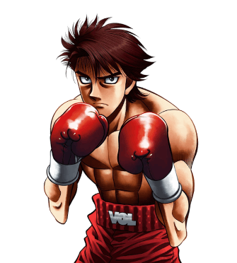

Es un boxeador de procedencia rusa que debutó como boxeador amateur en Japón para posteriormente convertirse en un boxeador peso pluma con el fin de obtener el cinturón de campeón japonés de Eiji Date.
A pesar de su presencia amenazante (como fue descrito por muchos) en el ring, Volg es un chico humilde e inocente que, como se revela antes de su pelea con Ippo, comenzó a trabajar como boxeador en Japón con el fin de recaudar dinero para su enferma madre.